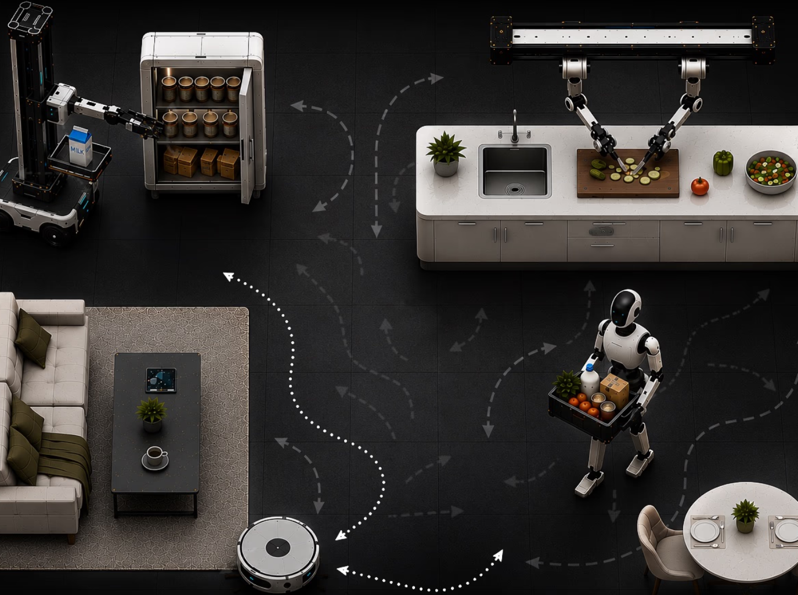
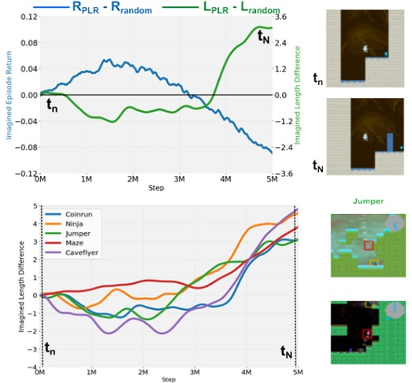
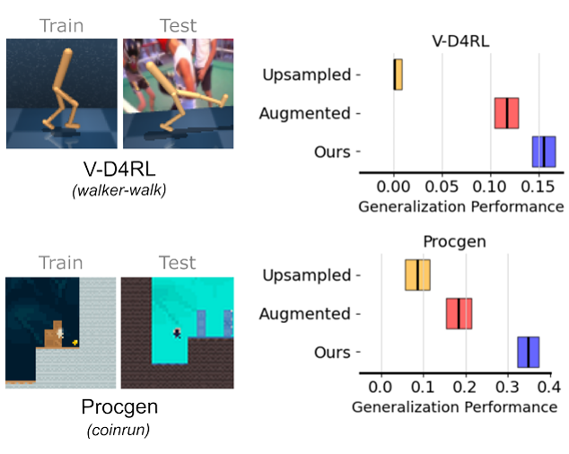
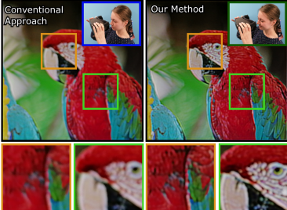
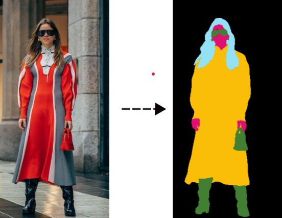

Ahmet H. Güzel, Odyssey Team
Odyssey Research Blog 2026 | blog post

, Matthew Thomas Jackson, Jarek Luca Liesen, Tim Rocktäschel, Jakob Nicolaus Foerster, Ilija Bogunovic, Jack Parker-Holder
Accepted 2025 NeurIPS | paper | project page

, Jack Parker-Holder, Ilija Bogunovic
Accepted 2025 TMLR | paper | 3rd Place Winner - UCL AI CDT Summer Poster Competition 2025

, Jeanne Beyazian, Praneeth Chakravarthula, Kaan Akşit
Biomedical Optics Express 2023 | paper | code | Best Poster Award

, Peihua Lai, Stephan Westland
Intelligent Systems Conference 2024 | code